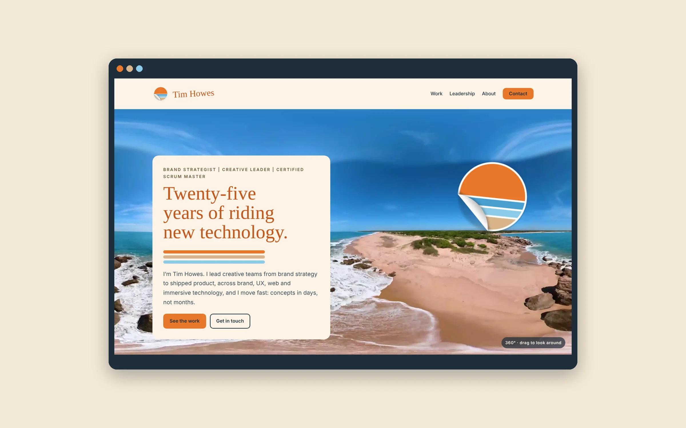
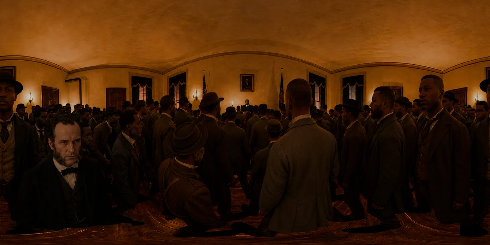

AI in my workflow
Using AI to go from idea to something people can click, in hours.
Days → hoursresearch
Weeks → daysdesign cycles
Months → weekscontent production

- Client
- Ruscella Immersive, OrchestrateXR and my own products
- Company
- Ongoing
- Role
- Creative Technologist
- Team
- Solo, with AI tools
- Discipline
- AI-assisted design, prototyping and production
Challenge
New AI tools arrive every month. The value isn’t in trying them all. It’s in knowing which ones turn a week of work into an afternoon, and building them into how a team works.
Solution
- Rapid prototyping of brand systems and websites with Claude: design systems, page builds and working prototypes in hours or days.
- Connected AI directly to production tools through MCP servers for Unity and OrchestrateXR.
- Strategic partner to OrchestrateXR, testing its AI integration for voice, image and script generation.
- Beta testing emerging platforms, including Atlas from World Labs.
- Generative image, video and 3D tools such as Higgsfield, Leonardo, Nano Banana and Tripo in everyday production.
My role
- Set up AI workflows for brand, web and immersive production
- Strategic partner and tester for AI features in OrchestrateXR
- Beta tester for emerging AI platforms
Highlights

Results
- Research from days to hours, design cycles from weeks to days, content production from months to weeks.